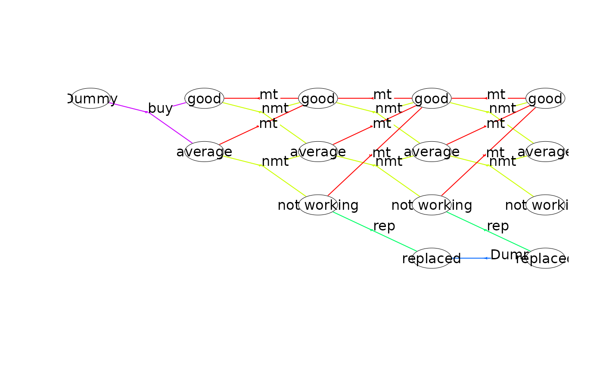
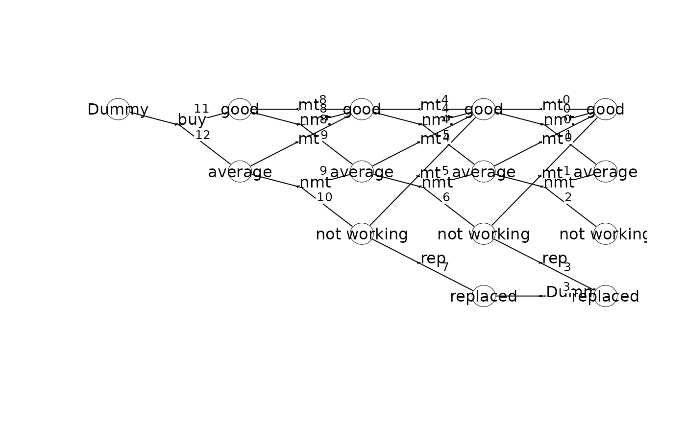
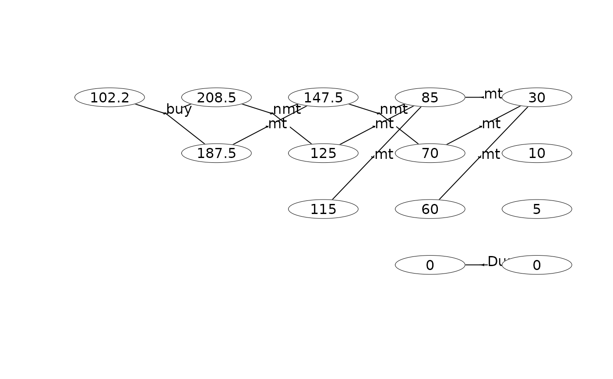
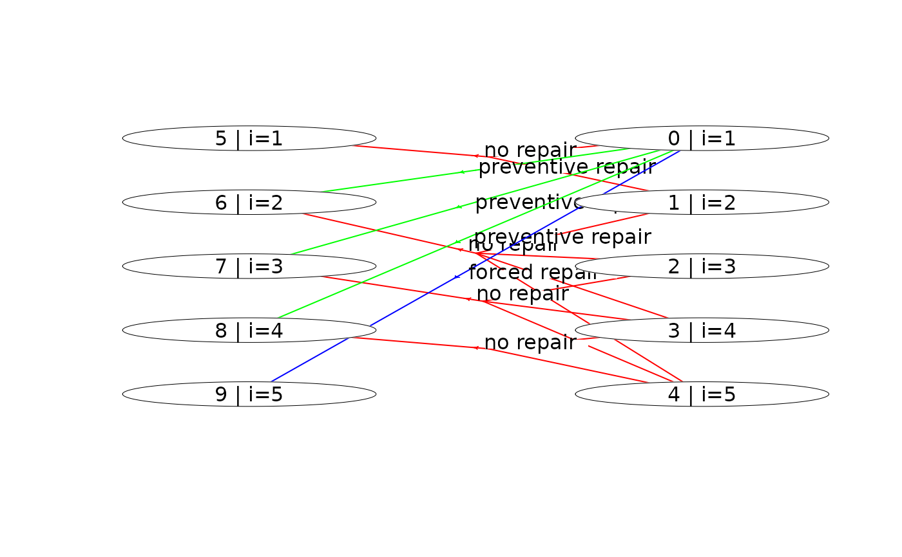
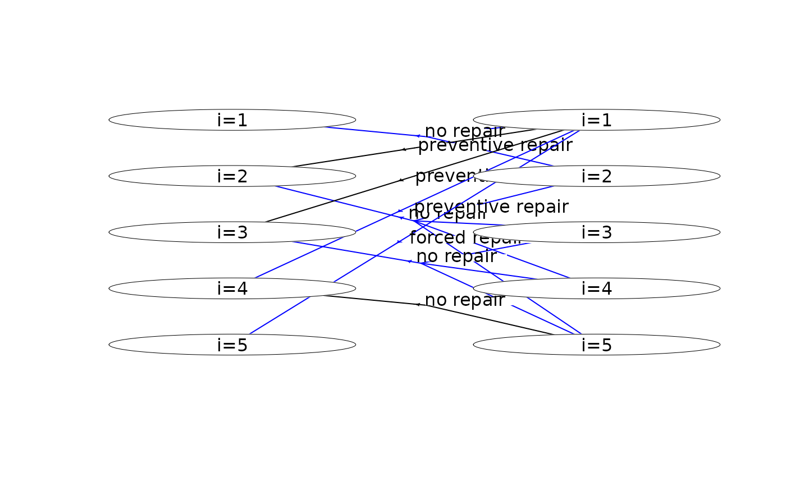
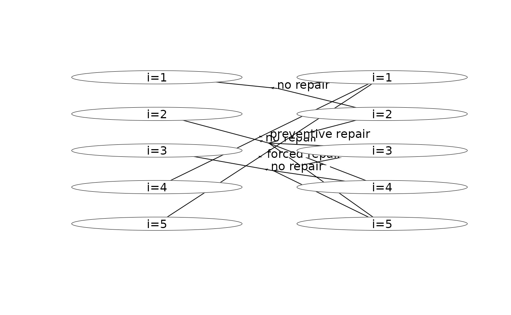
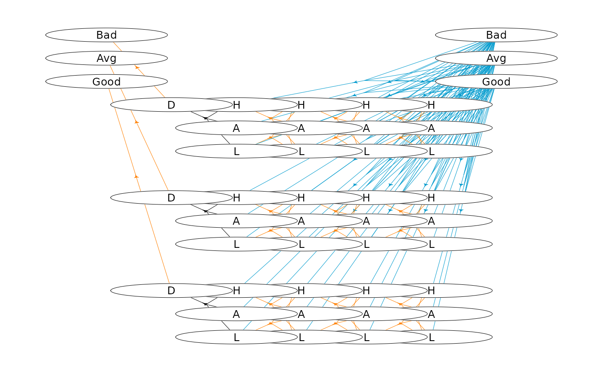
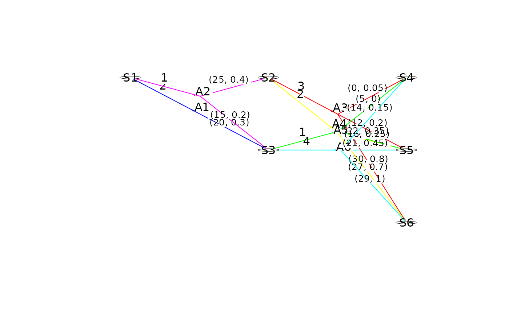

The plot is created based on a grid (rows, cols). Each grid point is numbered from bottom to
top and left to right (starting from 1), i.e. given grid point with coordinates (r, c) (where
(1,1) is the top left corner and (rows, cols) is the bottom right corner) the grid id is `(c
rows + r`. You must assign a node to the hypergraph to a grid point (see below).
Usage
plotHypergraph(
hgf,
gridDim,
showGrid = FALSE,
radx = 0.03,
rady = 0.05,
cex = 1,
marX = 0.035,
marY = 0.15,
drawBorder = FALSE,
actionOffset = 0.025,
transLabels = "none",
transLabelCex = 0.8 * cex,
transLabelAdj = c(0.5, -0.6),
stateLabel = "label",
actionLabel = "label",
actionWLabel = "none",
actionColor = c("", "label", "policy"),
actionsVisible = c("all", "policy"),
connectedTo = NULL,
recalcGrid = FALSE,
mdp = NULL,
...
)Arguments
- hgf
A list with the hypergraph containing two data frames, normally found using
getHypergraph(). The data framenodesmust have columns:sId(state id),gId(grid id) andlabel(node label). The data framehyperarcsmust have columnssId(head node),trans(a list-column of tail node ids),pr(a list-column of transition probabilities),actionWeights(a list-column of action weights),transWeights(a list-column of transition-by-weight matrices),aIdx(action index),label(action label),lwd(hyperarc line width),lty(hyperarc line type) andcol(hyperarc color).- gridDim
A 2-dim vector (rows, cols) representing the size of the grid.
- showGrid
If true show the grid points (good for debugging).
- radx
Horizontal radius of the box.
- rady
Vertical radius of the box.
- cex
Relative size of text.
- marX
Horizontal margin.
- marY
Vertical margin.
- drawBorder
If
TRUE, draw a border around the plot region and report the outside and inside padding (good for debugging).- actionOffset
Distance used to separate actions with the same start and trans states. Set to
0to draw overlapping actions.- transLabels
Transition-label mode.
"none"draws no transition labels (the default);"custom"draws values from an optionaltransLabelslist-column inhgf$hyperarcs; otherwise use a|-separated combination of"label","sId","prob", and"weights", for example"prob|weights". The older"state"spelling is treated as"label".- transLabelCex
Relative size of transition-label text.
- transLabelAdj
Position adjustment passed to
textempty()for transition labels, drawn at the middle of each split-to-transition branch.- stateLabel
What to plot in states.
"custom"uses astateLabelcolumn inhgf$nodes; otherwise use a|-separated combination of"label"(state label, default),"sId"(state id),"sIdx"(stage-based state index), and"weight"(optimal weight of the state).- actionLabel
What to plot near the split. One of
"none","custom"(uses anactionLabelcolumn inhgf$hyperarcs), or a|-separated combination of"label"(action label, default) and"aIdx".- actionWLabel
What to plot from the start state to the split. One of
"none"(default),"weight", or"custom"(uses anactionWLabelcolumn inhgf$hyperarcs).- actionColor
Action coloring scheme. Default
""uses black lines."label"uses different colors based on the action labels."policy"highlights the current policy.- actionsVisible
Action visibility mode.
"all"(default) shows all actions."policy"only shows actions in the current policy.- connectedTo
Optional vector of state ids. If supplied, plot only states reachable from these states by following visible hyperarcs forward, and trim hyperarcs and transition-level data to the remaining states.
- recalcGrid
If
TRUEandconnectedTois supplied, recalculate the grid for the visible nodes. Nodes keep their original columns, but visible nodes within each column are placed consecutively from the top and the number of grid rows is reduced to the maximum number of visible nodes in any column.- mdp
The MDP model. Required if
stateLabelcontains"weight",actionColor = "policy", oractionsVisible = "policy".- ...
Graphical parameters passed to
textempty.
Examples
## Set working dir
wd <- setwd(system.file("models", package = "MDP2"))
#### A finite-horizon replacement problem ####
mdp<-loadMDP("machine1_")
#> Read binary files (0.000117619 sec.)
#> Build the HMDP (3.4264e-05 sec.)
#> Checking MDP and found no errors (1.072e-06 sec.)
plot(mdp)
 plot(mdp, actionColor = "label") # colors based on labels
plot(mdp, actionColor = "label") # colors based on labels

plot(mdp, transLabels = "state") # label transitions with target state labels
 plot(mdp, transLabels = "prob") # label transitions with transition probabilities
plot(mdp, transLabels = "prob") # label transitions with transition probabilities
 plot(mdp, actionColor = "label", stateLabel = "sId|label") # state labels are 'sId | label'
plot(mdp, actionColor = "label", stateLabel = "sId|label") # state labels are 'sId | label'
 plot(mdp, stateLabel = "sIdx|label", radx = 0.01) # adjust radx in states
plot(mdp, stateLabel = "sIdx|label", radx = 0.01) # adjust radx in states
 plot(mdp, stateLabel = "label", actionWLabel = "none", actionLabel = "label",
transLabels = "sId", radx = 0.01)
plot(mdp, stateLabel = "label", actionWLabel = "none", actionLabel = "label",
transLabels = "sId", radx = 0.01)

scrapValues <- c(30, 10, 5, 0) # scrap values (the values of the 4 states at stage 4)
runValueIte(mdp, "Net reward" , termValues = scrapValues)
#> Run value iteration with epsilon = 0 at most 1 time(s)
#> using weight 'Net reward' under expected-weight Bellman operator.
#> Finished. Cpu time 6.441e-06 sec.
plot(mdp, actionColor = "policy") # highlight optimal policy
 plot(mdp, actionsVisible = "policy", stateLabel = "weight") # show only optimal policy
plot(mdp, actionsVisible = "policy", stateLabel = "weight") # show only optimal policy

#### An infinite-horizon maintenance problem ####
mdp<-loadMDP("hct611-1_")
#> Read binary files (0.000102981 sec.)
#> Build the HMDP (2.3764e-05 sec.)
#> Checking MDP and found no errors (1.442e-06 sec.)
plot(mdp) # plot the first two stages
 plot(mdp, actionColor = "label") # colors based on labels
plot(mdp, actionColor = "label") # colors based on labels
 plot(mdp, actionColor = "label", stateLabel = "sId|label") # state labels are 'sId | label'
plot(mdp, actionColor = "label", stateLabel = "sId|label") # state labels are 'sId | label'

runPolicyIteAve(mdp,"Net reward","Duration")
#> Run policy iteration under average expected-weight Bellman operator using
#> weight 'Net reward' over 'Duration'. Iterations (g):
#> 1 (-0.512821) 2 (-0.446154) 3 (-0.43379) 4 (-0.43379) finished. Cpu time: 1.442e-06 sec.
#> [1] -0.43379
plot(mdp, actionColor = "policy") # highlight optimal policy

plot(mdp, actionsVisible = "policy") # show only optimal policy

#### An infinite-horizon hierarchical replacement problem ####
library(magrittr)
mdp<-loadMDP("cow_")
#> Read binary files (0.000244504 sec.)
#> Build the HMDP (0.000141814 sec.)
#> Checking MDP and found no errors (3.837e-06 sec.)
hgf <- getHypergraph(mdp)
# modify labels
dat <- hgf$nodes %>%
dplyr::mutate(label = dplyr::case_when(
label == "Low yield" ~ "L",
label == "Avg yield" ~ "A",
label == "High yield" ~ "H",
label == "Dummy" ~ "D",
label == "Bad genetic level" ~ "Bad",
label == "Avg genetic level" ~ "Avg",
label == "Good genetic level" ~ "Good",
TRUE ~ "Error"
))
# assign nodes to grid ids
dat$gId[1:3]<-85:87
dat$gId[43:45]<-1:3
getGId<-function(process,stage,state) {
if (process==0) start=18
if (process==1) start=22
if (process==2) start=26
return(start + 14 * stage + state)
}
idx<-43
for (process in 0:2)
for (stage in 0:4)
for (state in 0:2) {
if (stage==0 & state>0) break
idx<-idx-1
#cat(idx,process,stage,state,getGId(process,stage,state),"\n")
dat$gId[idx]<-getGId(process,stage,state)
}
hgf$nodes <- dat
# modify labels
dat <- hgf$hyperarcs %>%
dplyr::mutate(label = dplyr::case_when(
label == "Replace" ~ "R",
label == "Keep" ~ "K",
label == "Dummy" ~ "D",
TRUE ~ "Error"
),
col = dplyr::case_when(
label == "R" ~ "deepskyblue3",
label == "K" ~ "darkorange1",
label == "D" ~ "black",
TRUE ~ "Error"
),
lwd = 0.5,
label = ""
)
hgf$hyperarcs <- dat
# plot hypergraph
oldpar <- par(mai = c(0, 0, 0, 0))
plotHypergraph(gridDim = c(14, 7), hgf, cex = 0.8, radx = 0.02, rady = 0.03)

par(oldpar)
## A simple finite-horizon MDP with action and transition weights
prefix <- file.path(tempdir(), "plot_transition_rewards_")
w <- binaryMDPWriter(prefix)
w$setWeights("Cost")
w$setTransWeights(c("Reward", "Disease"))
w$process()
w$stage()
w$state(label = "S1")
w$action(
label = "A1", weights = 2, id = c(1), pr = c(1),
transWeights = c(20, 0.3), end = TRUE
)
w$action(
label = "A2", weights = 1, id = c(0, 1), pr = c(0.3, 0.7),
transWeights = c(25, 0.4, 15, 0.2), end = TRUE
)
w$endState()
w$endStage()
w$stage()
w$state(label = "S2")
w$action(
label = "A3", weights = 3, id = c(0, 1, 2), pr = c(0.5, 0.3, 0.2),
transWeights = c(0, 0.05, 12, 0.2, 30, 0.8), end = TRUE
)
w$action(
label = "A4", weights = 2, id = c(1, 2), pr = c(0.6, 0.4),
transWeights = c(22, 0.35, 27, 0.7), end = TRUE
)
w$endState()
w$state(label = "S3")
w$action(
label = "A5", weights = 1, id = c(0, 1), pr = c(0.4, 0.6),
transWeights = c(5, 0, 16, 0.25), end = TRUE
)
w$action(
label = "A6", weights = 4, id = c(0, 1, 2), pr = c(0.1, 0.3, 0.6),
transWeights = c(14, 0.15, 21, 0.45, 29, 1), end = TRUE
)
w$endState()
w$endStage()
w$stage()
w$state(label = "S4", end = TRUE)
w$state(label = "S5", end = TRUE)
w$state(label = "S6", end = TRUE)
w$endStage()
w$endProcess()
w$closeWriter()
#>
#> Statistics:
#> states : 6
#> actions: 6
#> weights: 1
#>
#> Closing binary MDP writer.
#>
mdp <- loadMDP(prefix, getLog = FALSE)
plot(mdp, actionColor = "label", transLabels = "weights", actionWLabel = "weight",
radx = 0.005, rady = 0.01)

## Reset working dir
setwd(wd)